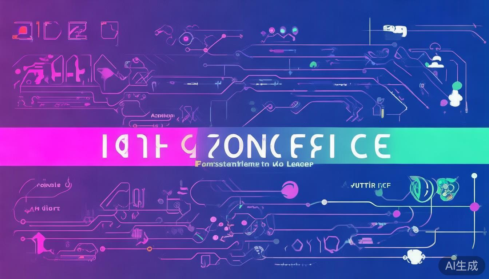

第 6 章 · AI编程革命：从Copilot到自主Agent
2021年GitHub Copilot发布时，很多人觉得它只是个「高级代码补全」。五年后回看，它开启的是一场编程范式的革命。
Copilot时代：AI辅助编程
GitHub Copilot基于OpenAI Codex，能够在IDE中实时补全代码。它的核心能力：
- 代码补全：根据上下文自动生成代码
- 注释生成代码：写注释，AI生成实现
- 测试生成：自动生成单元测试
- 文档生成：自动生成函数文档
GitHub统计：使用Copilot的开发者，编码速度提升55%，代码质量提升显著。
AI IDE：从辅助到主导

2024年后，新一代AI IDE（如Cursor、CodeBuddy、Windsurf）不再只是「补全代码」，而是主导整个开发流程：
- 对话式开发：用自然语言描述需求，AI生成完整项目
- 代码库理解：AI理解整个项目的架构和上下文
- 自动重构：AI提出优化方案并自动执行
- 多文件编辑：同时修改多个文件，保持一致性
自主编程Agent
2025-2026年，编程Agent开始走向自主：
- Devin（Cognition Labs）：号称「第一个AI软件工程师」，能独立完成完整项目
- SWE-agent：在SWE-bench上解决真实GitHub issue
- CodeBuddy Agent：腾讯的自主编程Agent，集成在IDE中
这些Agent能做的事：读需求文档 设计架构 写代码 跑测试 修bug 提交PR，全流程自动化。
对程序员的影响
AI不会取代程序员，但会改变程序员的工作：
- 初级程序员：AI替代重复性编码，需要更专注于设计和架构
- 中级程序员：AI成为日常工具，效率大幅提升
- 高级程序员：AI处理实现细节，人专注创新和决策
核心技能变化：
- 从「写代码」到「描述需求」
- 从「调语法」到「审架构」
- 从「单兵作战」到「人机协作」
本章要点
- AI编程经历了从「补全」到「主导」再到「自主」的演进
- AI不会取代程序员，但会用AI的程序员会取代不会用的
- 未来的核心竞争力是：问题定义能力、架构设计能力、AI协作能力
出处声明
本文由本站 AI 创作整理，内容基于公开知识/官方资料提炼，信息请以官方发布为准； 涉及的历史事件、产品与数据均可在公开渠道查证，本站不编造来源。引用外部内容遵循其原始许可，标注出处即可。